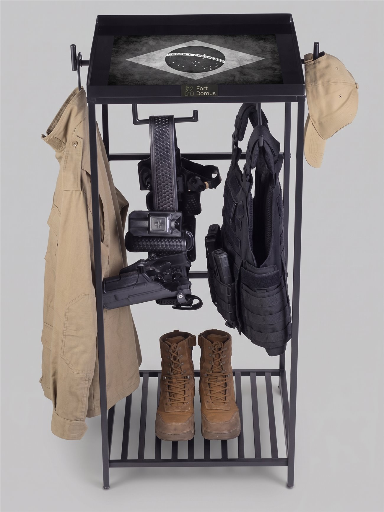

A história por trás da Fort Domus.
Uma necessidade real de organização após o serviço policial inspirou a criação de um espaço adequado para acomodar os equipamentos.
Ordem para o fim do plantão.
A Fort Domus nasceu do patrulhamento real. Como policial, ao final de cada plantão enfrentava a mesma dúvida: onde guardar o equipamento ao chegar em casa? Se colocasse o colete no guarda-roupa, o suor gerava mau cheiro e mofo; no cabide comum, quebrava. A única opção era jogar tudo sobre a cadeira, sofá ou chão.
Isso trazia dois problemas graves: bagunça e risco à segurança da família. Equipamentos táticos, canivetes, sprays e até o armamento ficavam espalhados. Além disso, gastamos alto no enxoval operacional para depois deixá-lo exposto à umidade, reduzindo drasticamente a vida útil dos itens.
Foi para resolver essa dor que criamos a Fort Domus. Desenvolvemos um produto de alta resistência, projetado sob medida para a rotina de quem veste a farda.
Mais organização.
Mais praticidade.
Mais proteção.
Por trás de cada detalhe.
Conheça um pouco mais da Fort Domus, nossos produtos e os detalhes que fazem parte da nossa construção.

Os espaços reservados serão substituídos por fotografias reais quando estiverem disponíveis.